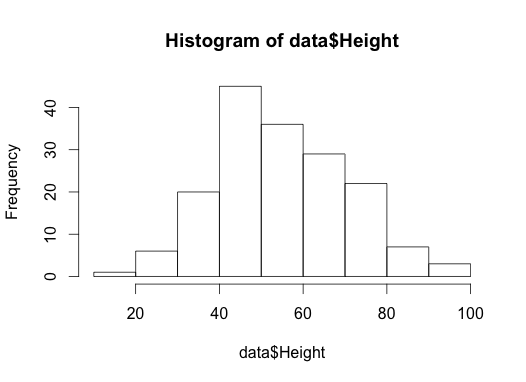

As empirical biologists, you’ll generally have data to read in.
You probably have your data in an Excel spreadsheet. The simplest
way to load these into R is to save a copy of the data as a comma
separated values file (csv) and work with that.
It is actually possible to read directly from Excel (See the
gdata
package that has a read.xls function, and see
this
page for other alternatives). This is usually more hassle than it’s
worth, and going through a comma separated file is easy enough.
To load the data into R:
1
data <- read.csv("data/seed_root_herbivores.csv")
(this doesn’t usually produce any output – the data is “just
there” now).
Clicking the little table icon next to the data in the Workspace
browser will view the data. Running View(data) will do the same
thing.
The data variable contains data.frame object. It is a number
of columns of the same length, arranged like a matrix. That
sentence is tricky, for reasons that will become apparent.
Often, looking at the first few rows is all you need to remind
yourself about what is in a data set.
Aside from issues around factors and character vectors (that we’ll
cover shortly) this is most of what you need to know about loading
data.
However, it’s useful to know things about saving it.
column names should be consistent and contain no whitespaces
or special characters.
for missing values, either leave them blank or use NA. But be
consistent and don’t use -999 or ? or your cat’s name.
Be careful with whitespace “x” will be treated differently to
“x “, and Excel makes it easy to accidently do the latter.
Consider the strip.white=TRUE argument to read.csv.
Think about the type of the data. We’ll cover this more, but are
you dealing with a TRUE/FALSE or a category or a count or a
measurements.
Dates and times will cause you nothing but pain. Excel and R
both have issues with dates and times, and exporting through
CSV can make them worse. I had a case with two different
year-zero offsets being used in one exported file. I recommend
Year-Month-Day (ISO 8601
format, or different colummns for different entries and combine
later.
Watch out for dashes between numbers. Excel will convert these
into dates. So if you have “Site-Plant” style numbers 5-20 will
get converted into the 20th of May 1904 or something equally
useless. Similar problems happen to
gene names
in bioinformatics!
Merged rows and columns will not work (or at least not in an
easily predictible way.
Spare rows at the top, or double header rows will not work
without jumping through hoops.
Equations will (should) convert to the value displayed in Excel
on export.
Looking at your data
Next we want to have a look at our data. The summary
function works with most types, and gives a by-column summary of
the data set
1
summary(data)
12345678910111213141516
Plot Seed.herbivore Root.herbivore No.stems
plot-40: 9 Mode :logical Mode :logical Min. : 1.00
plot-20: 8 FALSE:90 FALSE:58 1st Qu.: 1.00
plot-50: 8 TRUE :79 TRUE :111 Median : 1.00
plot-60: 8 NA's :0 NA's :0 Mean : 1.98
plot-16: 7 3rd Qu.: 3.00
plot-30: 7 Max. :10.00
(Other):122
Height Weight Seed.heads Seeds.in.25.heads
Min. :16.0 Min. : 0.26 Min. : 3 Min. : 0.0
1st Qu.:44.0 1st Qu.: 4.08 1st Qu.: 93 1st Qu.: 10.0
Median :54.0 Median : 8.05 Median : 175 Median : 19.0
Mean :55.5 Mean :11.20 Mean : 226 Mean : 22.1
3rd Qu.:67.0 3rd Qu.:14.77 3rd Qu.: 303 3rd Qu.: 32.0
Max. :97.0 Max. :55.51 Max. :1003 Max. :100.0
Subsetting
R has many powerful subset operators and mastering them will allow you to easily perform complex operation on any kind of dataset. Allows you to manipulate data very succinctly.
There a bunch of different ways of extracting bits of your data.
Plotting is covered in the next R module, but it’s one of the best
things about R so I can’t resist showing how to do it:
Here is a histogram of the height variable:
1
hist(data$Height)

(it will appear in the bottom right of your screen)
Here is a scatter plot of Height vs weight:
1
plot(data$Weight, data$Height)
The order of arguments is x-variable, y-variable.
There is an alternative interface using R’s “formulae” – you’ll
see this a lot in statistical models. Read this as “Height is a
function of Weight”. It makes nicer axis labels, too.
1
plot(Height ~ Weight, data)
Here is a series of bivariate plots for height, weight and the
number of seed heads:
1
pairs(data[c("Height","Weight","Seed.heads")])
The take-home being that R makes it very easy to create graphs, and
most people who use it casually just make plots of whatever they’re
looking at. The plots can vary from quick and dirty like this to
really beautiful pieces of art.
The above all index by name or by location (index). However,
you generally want to avoid referencing by number in your saved
code, e.g.:
1
data.height <- data[[5]]
This is because if you change the order of your spreadsheet (add or
delete a column), everything that depends on data.height may
change. You may also see people do this in their code.
1
data.height <- data[,5]
This should really be avoided. By name is much more robust and
easy to read later on, even if it is more typing at first.
When you are computing the indices. As an example: suppose that
you wanted every other row (perhaps you’re trying to generate a
nonrandom some sample of data?) Remember seq from above? We can
generate a sequnce of integers 1, 3, …, up to the last (or second
to last) row in our data set like this:
1
idx <- seq(1, nrow(data), by=2)
Then subset like this:
1
data.oddrows <- data[idx,]
Our new data set has half the rows of the old data set:
1
nrow(data.oddrows)
1
[1] 85
1
nrow(data)
1
[1] 169
Because row names are preserved, you can see the odd numbers in the
row names.
Subsetting can be useful when you want to look at bits of your
data. For example, all the rows where the Height is more than 10
and there was no seed herbivore:
Programs should be written for people to read, and only
incidentally for machines to execute (Structure and
Interpretation of Computer Programs” by Abelson and Sussman)
The subset function to simplify writing complex subsets
There is a function subset that may help you write complex
subsets.
This can help, especially interactively, but it can also bite you.
It is not always obvious where the “value” of the variables in the
second argument are coming from. For example:
This works fine, because it found idx.tall. So when you read
your code, you need to think carefully about which values are
coming from the data.frame and which are coming from elsewhere.
This is an unfortunate example of a function designed to be used by
beginners, but it only really understandable once you understand
more of what is going on. You’ll see it used widely, and it can
simplify things. But be careful.
Adding new columns
It is easy to add new columns, perhaps based on old ones:
Make a subset of the data only for plants with 1 stem (column No.stems). Plot Height vs. Weight for the subset.
Count how many plants have seed and root herbivores using the table function (columns Seed.herbivore and Root.herbivore ). Try to find out whether plants with seed herbivores tend to have also root herbivores.
Make a boxplot to examine whether Root.Herbivores have an effect on Height. Use the function boxplot.
Is the difference statistically significant? Test it using the t.test function.